Loading required package: pacmanExploratory Analysis of TEDS-2016 data
Assignment 2
EPPS 6323
assignment
Run an exploratory data analysis with R using the TEDS2016 dataset.
Assignment 2
Run an exploratory data analysis with R using the TEDS2016 dataset.
Load the data
# load the data
teds <- read_stata("https://github.com/datageneration/home/blob/master/DataProgramming/data/TEDS_2016.dta?raw=true")Converting atomic to factors. Please wait...Take a look at the data
head(teds) District Sex Age Edu Arear Career Career8 Ethnic Party PartyID Tondu Tondu3
1 201 2 4 4 1 1 1 1 25 9 3 2
2 201 2 2 5 1 2 3 2 25 9 5 3
3 201 1 5 5 1 1 1 2 3 1 3 2
4 201 1 4 2 1 4 4 1 25 9 5 3
5 201 2 5 1 1 3 5 9 25 9 9 9
6 201 2 5 2 1 2 7 1 6 2 4 2
nI2 votetsai green votetsai_nm votetsai_all Independence Unification sq
1 3 NA 0 NA 0 0 0 1
2 98 1 0 1 1 1 0 0
3 98 0 0 0 0 0 0 1
4 3 NA 0 NA 0 1 0 0
5 98 NA 0 NA 0 0 0 0
6 98 1 1 1 1 0 0 1
Taiwanese edu female whitecollar lowincome income income_nm age KMT DPP npp
1 1 4 1 1 4 8.0 8 59 0 0 0
2 0 5 1 1 4 7.0 7 39 0 0 0
3 0 5 0 1 5 8.0 8 63 1 0 0
4 1 2 0 0 4 5.0 5 55 0 0 0
5 0 1 1 0 3 5.5 NA 76 0 0 0
6 1 2 1 1 5 9.0 9 64 0 1 0
noparty pfp South north Minnan_father Mainland_father Econ_worse Inequality
1 1 0 0 1 1 0 0 1
2 1 0 0 1 1 0 0 1
3 0 0 0 1 1 0 1 1
4 1 0 0 1 1 0 1 1
5 1 0 0 1 1 0 0 0
6 0 0 0 1 1 0 1 1
inequality5 econworse5 Govt_for_public pubwelf5 Govt_dont_care highincome
1 4 3 1 5 0 1
2 5 3 1 5 0 1
3 5 4 1 4 1 1
4 5 5 0 1 1 1
5 3 3 0 3 0 NA
6 5 4 0 2 1 1
votekmt votekmt_nm Blue Green No_Party voteblue voteblue_nm votedpp_1
1 0 NA 0 0 0 0 NA NA
2 0 0 0 0 0 0 0 1
3 1 1 0 0 0 1 1 0
4 0 NA 0 0 0 0 NA NA
5 0 NA 0 0 0 0 NA NA
6 0 0 0 0 0 0 0 1
votekmt_1
1 NA
2 0
3 1
4 NA
5 NA
6 0colnames(teds) [1] "District" "Sex" "Age" "Edu"
[5] "Arear" "Career" "Career8" "Ethnic"
[9] "Party" "PartyID" "Tondu" "Tondu3"
[13] "nI2" "votetsai" "green" "votetsai_nm"
[17] "votetsai_all" "Independence" "Unification" "sq"
[21] "Taiwanese" "edu" "female" "whitecollar"
[25] "lowincome" "income" "income_nm" "age"
[29] "KMT" "DPP" "npp" "noparty"
[33] "pfp" "South" "north" "Minnan_father"
[37] "Mainland_father" "Econ_worse" "Inequality" "inequality5"
[41] "econworse5" "Govt_for_public" "pubwelf5" "Govt_dont_care"
[45] "highincome" "votekmt" "votekmt_nm" "Blue"
[49] "Green" "No_Party" "voteblue" "voteblue_nm"
[53] "votedpp_1" "votekmt_1" Prepare the data
# Prepare the analyze the Party ID variable
# Assign label to the values (1=KMT, 2=DPP, 3=NP, 4=PFP, 5=TSU, 6=NPP, 7="NA")
teds$PartyID <- factor(teds$PartyID, labels=c("KMT","DPP","NP","PFP", "TSU", "NPP","NA"))
# Check the variable
attach(teds)
head(PartyID)[1] NA NA KMT NA NA DPP
Levels: KMT DPP NP PFP TSU NPP NAtail(PartyID)[1] NA NA DPP NA NA NA
Levels: KMT DPP NP PFP TSU NPP NA# Let's try doing the same with the Tondu variable
teds$Tondu <- factor(teds$Tondu, labels = get_labels(teds$Tondu))Start to visualize
# Run a frequency table of the Party ID variable using the descr package
freq(teds$PartyID)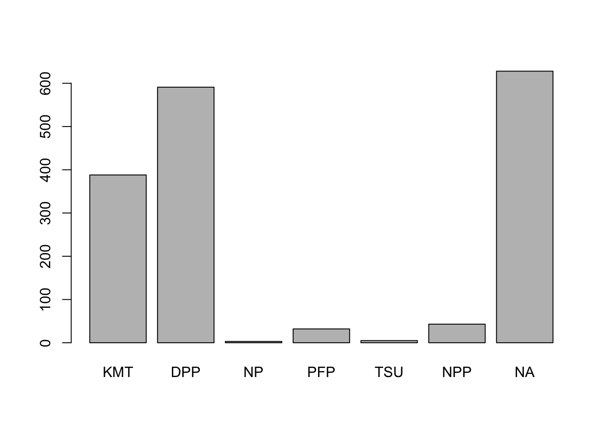
teds$PartyID
Frequency Percent
KMT 388 22.9586
DPP 591 34.9704
NP 3 0.1775
PFP 32 1.8935
TSU 5 0.2959
NPP 43 2.5444
NA 628 37.1598
Total 1690 100.0000# Plot the Party ID variable
teds %>%
count(PartyID) %>%
mutate(perc = n / nrow(teds)) -> T2
ggplot(T2, aes(x = reorder(PartyID, -perc),y = perc,fill=PartyID)) +
geom_bar(stat = "identity") +
ylab("Party Support (%)") +
xlab("Taiwan Political Parties") +
theme_bw() +
scale_fill_manual(values=c("steel blue","forestgreen","khaki1","orange","goldenrod","yellow","grey"))
Questions
What problems do you encounter when working with the dataset?
I had trouble finding the codebook. Error messages about conflicting labels. The data coming from stata has labels attached to the variables. However, I had some difficulty figuring out how to view the labels directly in R, rather than referring to a codebook or manually setting the labels. I found the sjlabeller has a function called “get_labels()” that makes this very easy for variables that have this meta information included, like the Tondu variable.
get_labels(teds$Tondu)[1] "Immediate unification"
[2] "Maintain the status quo,move toward unification"
[3] "Maintain the status quo, decide either unification or independence"
[4] "Maintain the status quo forever"
[5] "Maintain the status quo,move toward independence"
[6] "Immediate independence"
[7] "Nonresponse" How to deal with missing values? In general, you can either exclude or impute missing values.
Explore the relationship between Tondu and other variables
including female, DPP, age, income, edu, Taiwanese and Econ_worse. What methods would you use?
To begin exploring the data, I like to generate some simple visualizations to see the spread of the data. These are quick, unpolished visualizations just to get an idea of what we’re working with.
If we want to do the same visualization for multiple variables, we can wrap it in a for loop to print out our charts quickly.
# Binary variables bar charts
var_list <- c("female", "DPP", "Taiwanese", "Econ_worse")
for (var in var_list) {
chart <- teds %>%
ggplot(aes(x=Tondu, y=!!sym(var)), fill=!!sym(var))+
geom_bar(stat="identity") +
coord_flip() +
labs(title=paste("Tondu and ",var))
print(chart)
}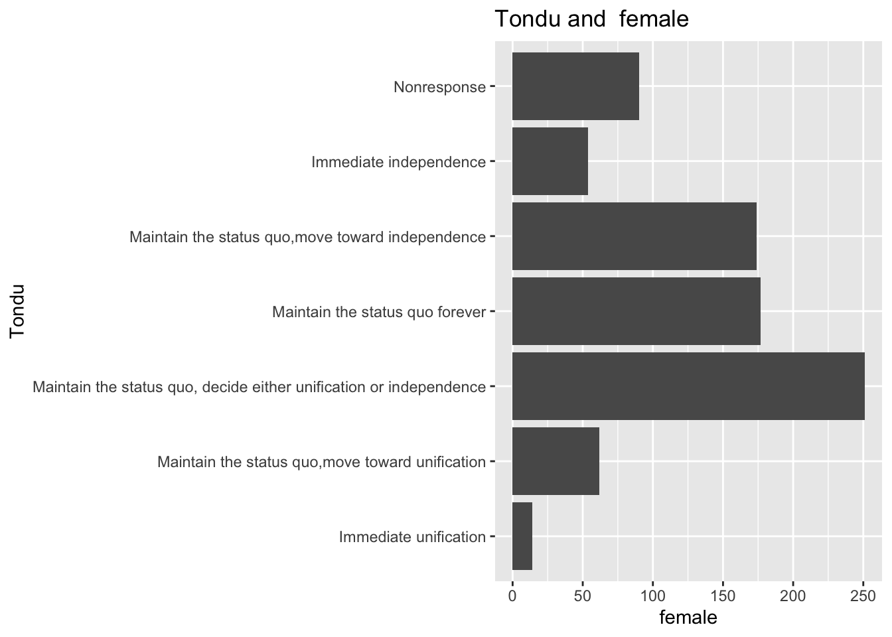
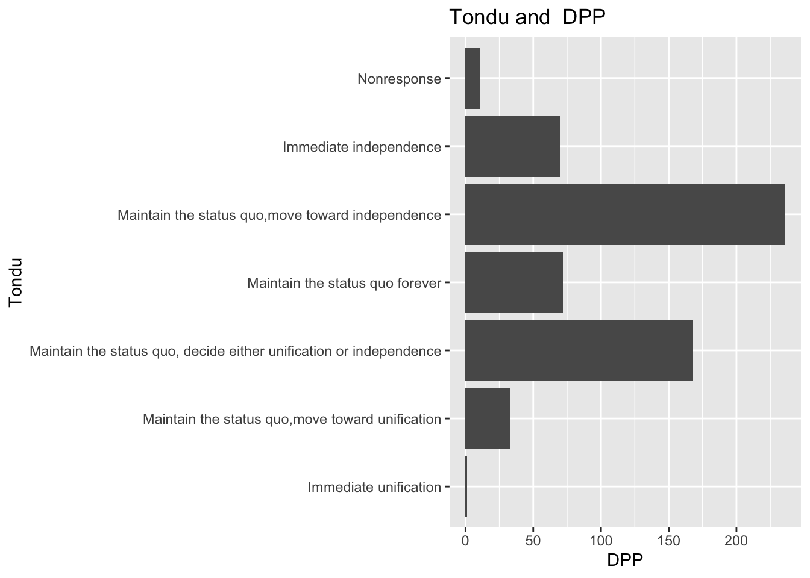
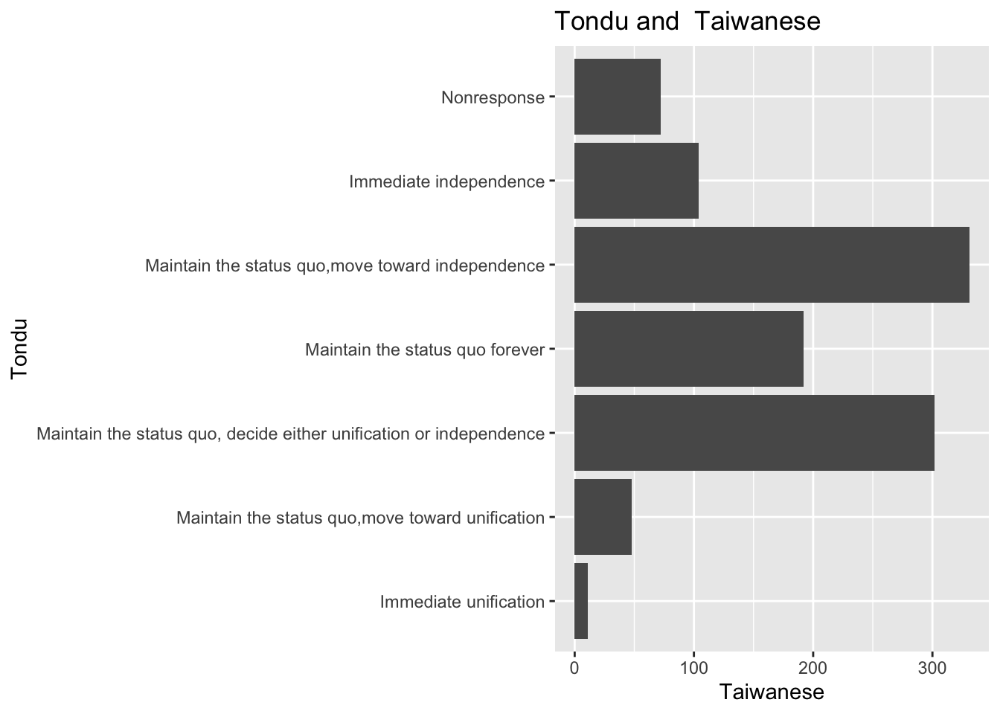
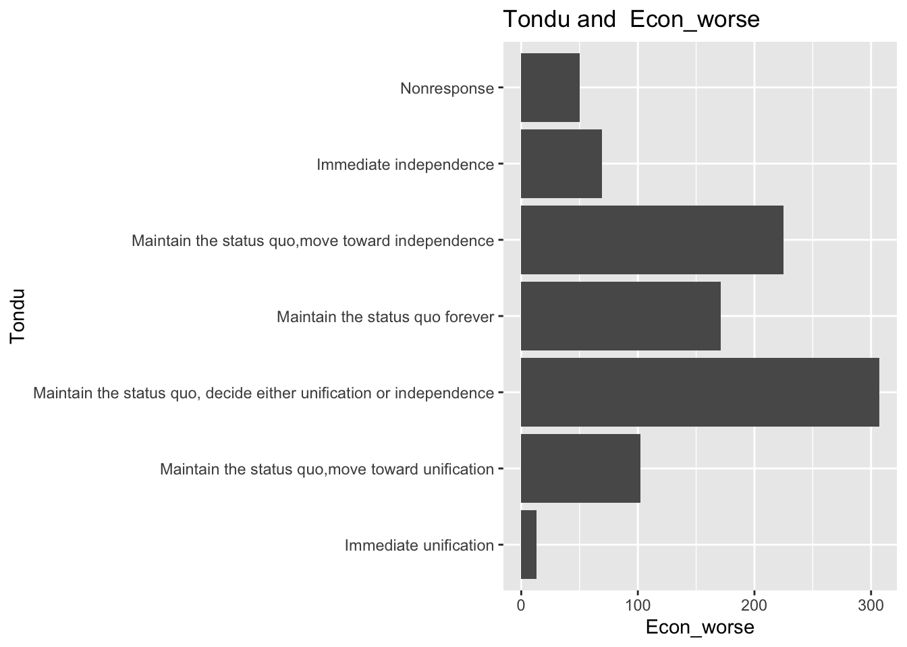
# Tondu and age
# let's find the mean age, grouped by Tondu
teds %>%
group_by(Tondu) %>%
summarize(m = mean(age)) %>%
ggplot(aes(x=Tondu, y=m)) +
geom_bar(stat = "identity") +
coord_flip()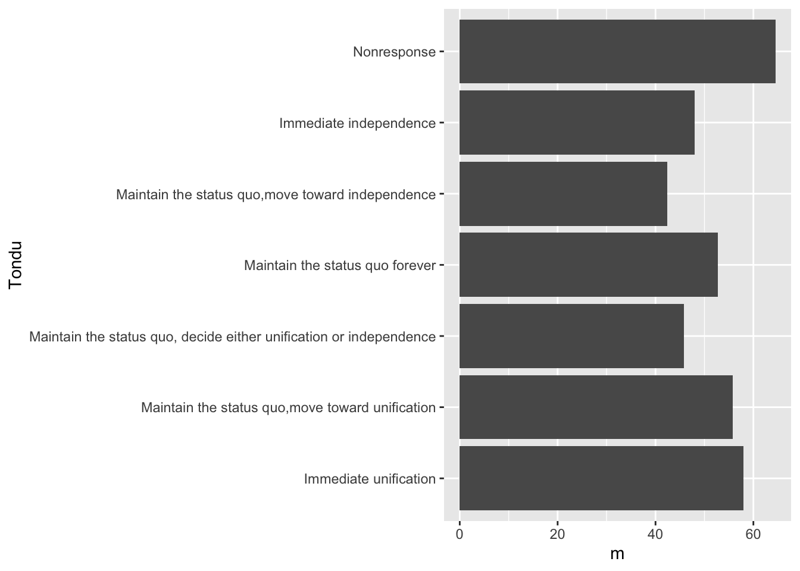
# Tondu and income
teds %>%
group_by(Tondu) %>%
summarize(m = mean(income)) %>%
ggplot(aes(x=Tondu, y=m)) +
geom_bar(stat = "identity") +
coord_flip()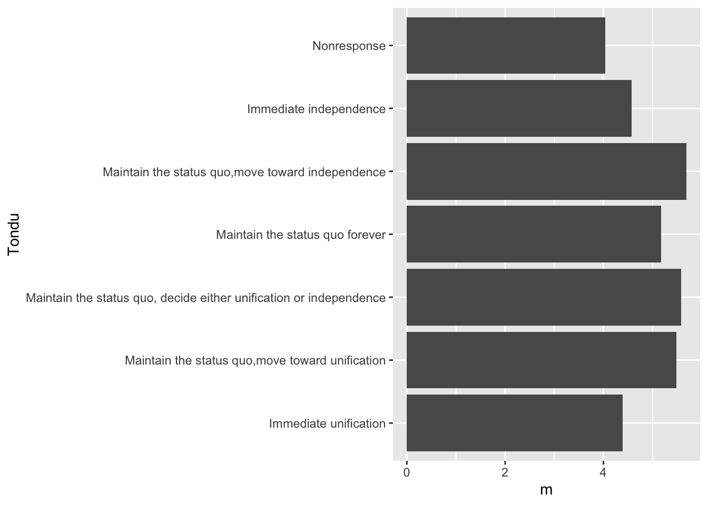
# Tondu and edu
# multiple levels of variable, no baked in labels
teds %>%
ggplot(aes(x=Tondu)) +
geom_bar() +
coord_flip() +
facet_wrap(~Edu)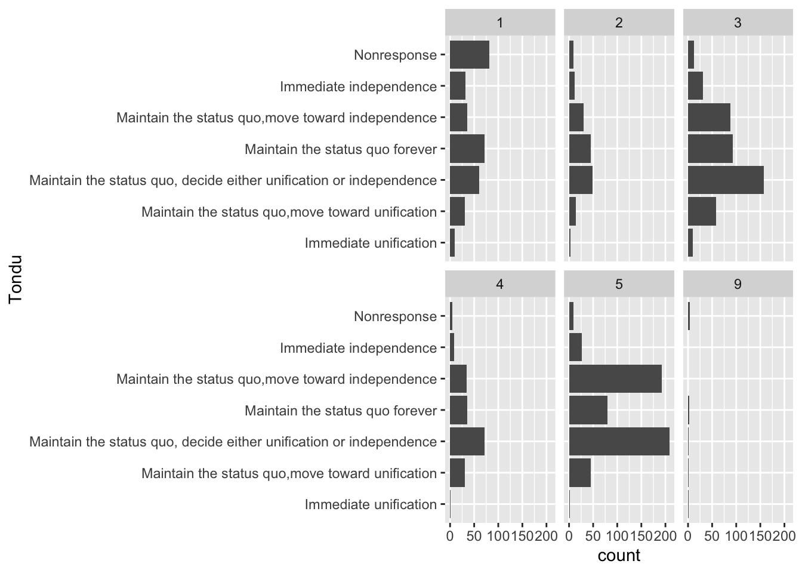
# Tondu and Taiwanese
# binary variable
teds %>%
ggplot(aes(x=Tondu)) +
geom_bar() +
coord_flip() +
facet_wrap(~Taiwanese)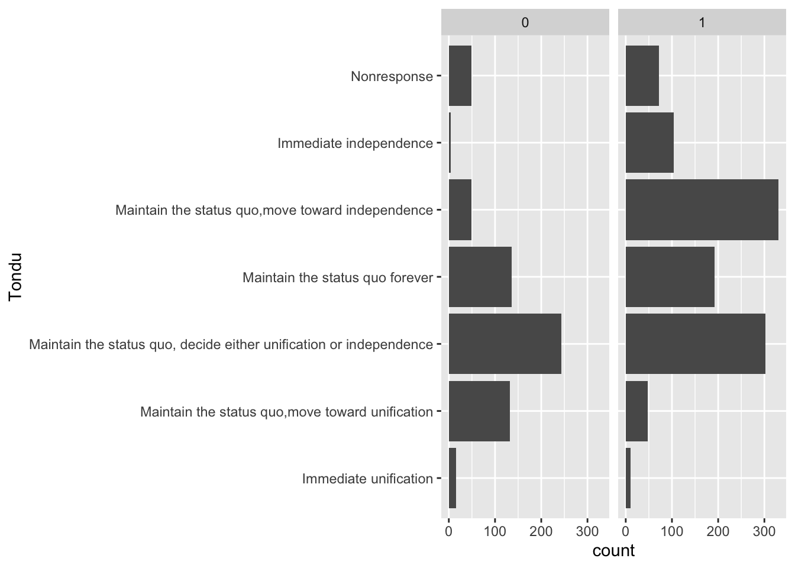
# Tondu and econ-worse
# binary variable
teds %>%
ggplot(aes(x=Tondu)) +
geom_bar() +
coord_flip() +
facet_wrap(~Econ_worse)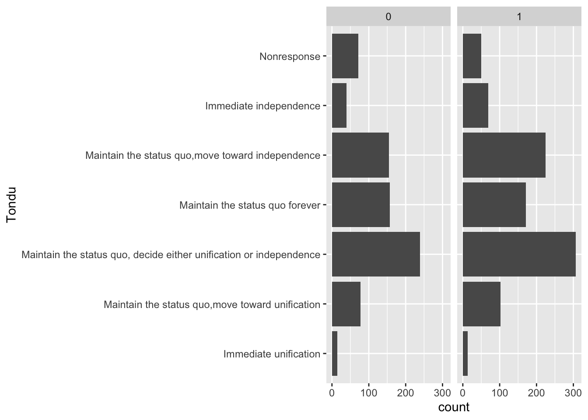
# Tondu and votesai variable
teds %>%
ggplot(aes(x=Tondu)) +
geom_bar() +
coord_flip() +
facet_wrap(~votetsai)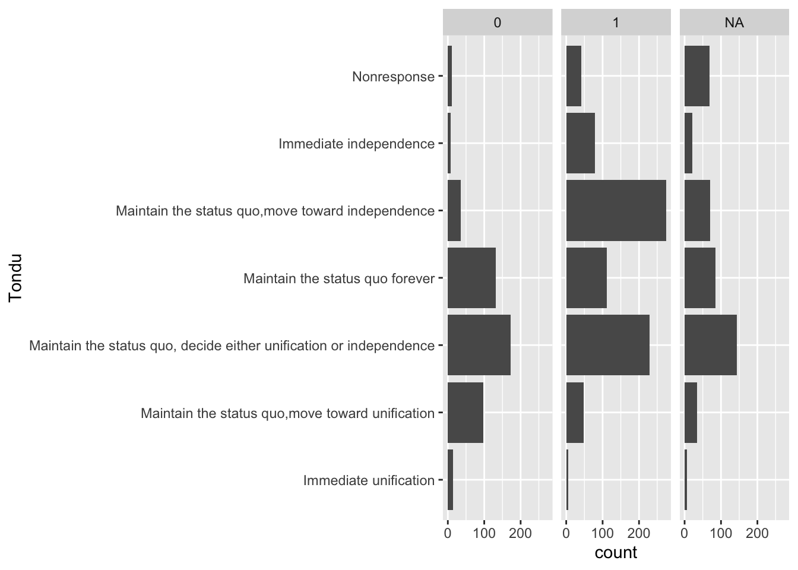
Generate frequency table and barchart of the Tondu variable.
Assign labels to the variable using the following:
teds$Tondu<-as.numeric(teds$Tondu,labels=c("Unification now”, “Status quo, unif. in future”, “Status quo, decide later", "Status quo forever", "Status quo, indep. in future", "Independence now”, “No response"))Create the table and bar chart
# frequency table
freq(teds$Tondu)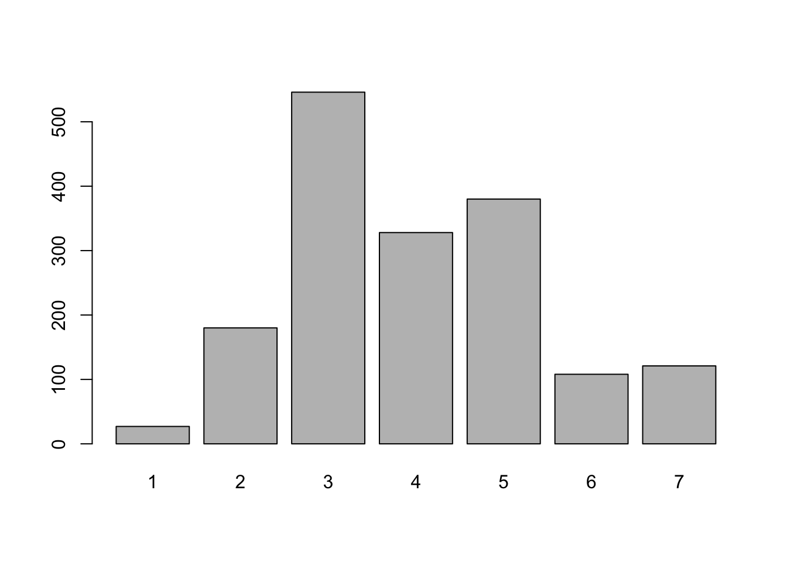
teds$Tondu
Frequency Percent
1 27 1.598
2 180 10.651
3 546 32.308
4 328 19.408
5 380 22.485
6 108 6.391
7 121 7.160
Total 1690 100.000# Plot the Party ID variable
teds %>%
count(Tondu) %>%
mutate(perc = n / nrow(teds)) -> T2
ggplot(T2, aes(x = reorder(Tondu, -perc),y = perc,fill=Tondu)) +
geom_bar(stat = "identity") +
ylab("Tondu (percentage)") +
xlab("") +
theme_bw()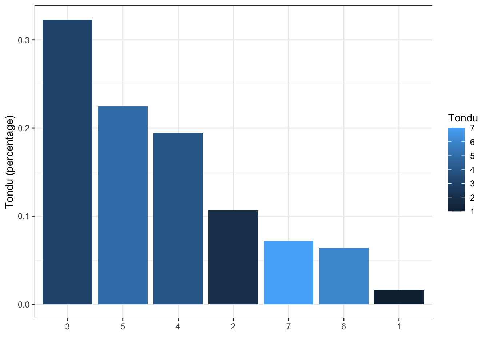